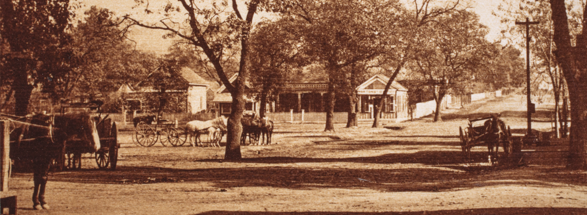

City Hall
© 2020 Hannah Clayborn All Rights Reserved
|
The rare Richardsonian Romanesque structure that imperially dominated downtown Healdsburg at the southeast corner of the Plaza for 75 years was not the first city hall. Now the term “Old City Hall” conjures a nondescript structure on that corner that a makeover turned into the Oakville Grocery. But there may still be a few old timers who remember what “Old City Hall” meant for so long, the imposing three-story brick building that stood there from 1886 to 1960. Even though they only knew it in its decline, they recalled it fondly, some even reverently. That was a “real City Hall," they invariably told me.
The building they remember was the third to serve the City of Healdsburg. When the town incorporated under state law in 1867 its needs were modest. The newly elected Trustees met in the cramped office of the first mayor and City Attorney, L .A. Norton. “Norton’s Office”, on the northeast corner of Center and Matheson, was a magnet for movers and shakers anyway, so it filled the bill until larger quarters could be found. |

Norton's Office, at the northeast corner of South (Matheson) St. and Center St., served as the first City Hall starting in 1867. (Sonoma County Library)
|
Shrouded In Mystery
The momentum and political machinations needed to build the first real City Hall, the most impressive public building ever to grace Healdsburg, may always be shrouded in mystery. It began in the early 1880s, years for which there are no surviving newspaper records. We may never know what private lobbying or public debate surrounded the decision to build the Romanesque-style structure on the southeast corner of Matheson and Center Streets. It is obvious from the starkly factual minutes of the City Trustee meetings that by the time the subject was formally introduced in January 1885, the City Fathers had already made up their minds. At that meeting the Trustees decided to buy the corner lot for $1,800. One week later a special strategy meeting worked out how a proposal for a new City Hall should be presented to the public. The answer: $10,000 in bonds bearing 7% interest that could be sold above par. The bond issue went to the voters on March 30, 1885. Of the 220 citizens who bothered to vote (out of a total population of about 2,000), 205 were for it and 14 were against—a landslide victory. In the 1800s public opinion in Healdsburg tended to polarize along political party lines. For the first half century of its municipal life Healdsburg had two warring newspapers, one progressively Republican, the other devoutly Democrat. For a short time there was even a third Socialist sheet called the Sotoyome Sun. These papers took opposing sides on almost every important civic issue and their respective readers usually followed suit. On a few notable occasions, however, like the building of City Hall in 1885, an issue got overwhelming bipartisan voter support from the citizens. Romanesque Design Wins
The earliest surviving newspaper of the 1880s is the Russian River Flag of late 1885. We can guess the position of its editor on the civic project by his complete silence on the subject. The construction of the new City Hall, the biggest building project in the history of the town, took place between August 19, 1885, and May 12, 1886, but not even one report appeared in the Flag about it. And this was a newspaper that usually reported every broken collarbone and whist party in a ten-mile radius. On May 19, 1886, the following grumpy report appeared at the bottom of page three: Healdsburg true to her record has been quarreling over the question of who should dedicate the City Hall. Like everything else she undertakes she got left, a delegation from Santa Rosa carrying out the honors last Sunday [May 16]. As the hall has been opened with the proper eclat we are all satisfied and will now settle down for another snooze until some public-spirited citizen proposes something for the good of the town. Next? There is little doubt that the missing issues of the Democratic Healdsburg Enterprise newspaper carried many reports on the progress of Healdsburg’s first impressive structure. From Trustee meeting minutes we know that the design for the new City Hall, an elegant rendition of repeating Roman arches and medieval-flavored corner spires, was the winner of a design competition held by the Trustees in the spring of 1885. The Trustees were able to purchase the finished design entered by architects Samuel and Joseph Catham Newsom for $300. The well known Newsom Brothers of San Francisco designed homes for wealthy Northern California families, the most famous still standing being the Carson Mansion in Eureka. But they also designed some notable public buildings including two Oakland City Halls (1869 and 1879), Berkeley City Hall (1884), and the Napa Valley Opera House (1879). Unfortunately it was soon discovered that the lot purchased for Healdsburg's City Hall was too small to hold the Newsom Brothers' proposed Romanesque building. City officials tried to buy four feet of the adjoining lot, then owned by pioneer mayor, L. A. Norton. Norton, by now a wealthy senior citizen, nevertheless held out for $400 for the narrow strip. His reluctance may betray his opinion of the new City Hall. The Trustees refused to pay Norton and instead hired the Newsom Brothers to downsize the structure for an additional $140.
A conventional bid process brought the construction contract to E. G. Hall for $12,500. All who observed the construction had to agree that the City got its money’s worth. Hall, a highly respected local carpenter and master mechanic in cement and brick work, was rumored to have lost a good deal of money on the contract, “going broke” shortly after completing it. The Trustees did approve some cost overruns for contractor Hall on May 3, amounting to $104.10. At the same meeting they granted the request of the Rod Matheson Post of the Grand Army of the Republic, a Healdsburg contingent of a Santa Rosa-based Civil War veteran’s group, to dedicate the new building. Although the Russian RIver Flag remained sullenly silent, the Santa Rosa Press Democrat was favorably impressed: Healdsburg possesses the finest City Hall of any town north of the bay of San Francisco. It is situated at the northeast corner of the plaza, and can be seen from all parts of the city. It is a building of gothic architecture, and has but to be seen to be admired. Healdsburgers are justly proud of their monument, and truly it is a monument befitting one of the prettiest towns in the state. As stated, the building is of brick and of gothic architecture, with pinnacles, buttresses, and arches with imitation stone trimmings. It contains a library room, 16 by 22:6; council chamber, 22.-6 by 23; court room, 23 by 34; firemen’s meeting room, 22:6 by 24; trustee’s room, 22:6 by 24; marshal’s office, 22:6 by 22:6; city attorney’s office, 22:6 by 22:6; jury room, 16 by 22. There is also a vault for keeping records in the marshal’s office. The strong room or jail is 22:6 by 23:6, with four iron cells. The upper story is an unfurnished attic for future use… Sonoma Democrat, Volume XXIX, Number 19, 27 February 1886 |
|
Anybody Who Was Anybody
At the grand dedication, on May 16, 1886, the uniformed G.A.R. had to share space with the smartly outfitted town band and volunteer fire brigade. Anybody who was anybody was hanging out the second and third story windows to have their photograph taken. Unlike the disgruntled Russian River Flag editor, it appears that the majority of the townsfolk took pride in their new civic temple. The City Hall was large enough to simultaneously hold the Council Chambers, Municipal Court, Fire Department, with a free public reading room on the second floor thrown in. At different times a post office and school gymnasium inhabited the third floor, and an express and telegraph company occupied what later became the Police Department. The Chamber of Commerce once filled the space that became the City Clerk’s office in the 1950s. The structure came to symbolize the aspirations of the ambitious small town. Optimistic City Fathers had commissioned a structure large enough to supervise a city three times as populous as Healdsburg. The medieval look of Richardsonian Romanesque architecture was a perfect backdrop for Healdsburg's signature annual event, the May Day Knighthood Tournament, and that might certainly have figured in the Trustee's choice of this design. (See: Festivals and Parades) Changes to the building over the course of years also reflected changes in the larger community. From 1881 to 1896 the Healdsburg Plaza had a high bell tower and 778- pound bell as its centerpiece. This bell served as a fire alarm to summon the volunteer fire brigade. Ironically an earlier bell tower in another location was torched by an adjacent building fire before it could sound an alarm. By 1895 the rickety plaza structure was giving out false alarms as it swayed majestically in high winds. “Old Miss Bell Tower”, as she was called in the press, had become an aging “eyesore” and was burned to the ground as a training exercise by the volunteer fire brigade in 1896. The bell, still in great shape, was moved to the decade-old City Hall, precipitating its first major alteration. The roof of the central cupola, with its charming round windows, was raised to create a lacy, open belfry. The main portion remained intact, elongated now to accommodate the bell. Above, the Gothic cupola was opened into a belfry to accommodate a fire bell in 1896. The photo above is circa 1890, and the one below about 1900.
Details Disguised
Inevitably the current of passing years, and misguided attempts at modernization began to erode the structure, and first to go were the many ornamental details that made that relatively rare style so distinctive. Purely decorative details—filigreed ironwork on rooftops, fanciful finials and spires, complex window and porch treatments—are the most definitive aspect of Victorian architecture, and unfortunately are often the first features lost. Ironically late Twentieth-century Post-modernist architecture often tried to copy the basic form of Victorian classicism, ignoring entirely the all-important details. In the decades that followed the building of the grand Romanesque Healdsburg City Hall, “modern” taste began to frown on such fussy Victorian “frou-frou”. In 1925 the central tower/belfry was removed from City Hall, sparking a heated controversy about the fate of the bell. Fortunately the bell was saved, albeit as lawn furniture for the Plaza, later the Fire Department, and finally the Healdsburg Museum. The City Hall was not so fortunate. A new top section for the tower was built in a clashing geometric Art Deco style and much of the romantic detail had been removed: corner spires, rooftop widow’s walk, and flagpoles. Not only had the building lost its most charming features, the outside had been covered with a layer of lime plaster to disguise the old bricks beneath. Thus City Hall, a tired beauty, entered middle age stripped of her old-fashioned buttons and bows, and sporting a new hat some thought inappropriate to her years. It is odd that there are almost no existing photographs of the interior of this building. Judging by the over-the-top luxury interiors evident in other buildings designed by the Newsom Brothers (see the Carson House above), I would expect at the very least to have seen high-quality wood detail and moldings. The few photos I have found bear this out, although the wood is covered with many layers of paint. I have only recently discovered how unusual this design was for its time. It belongs to a subset of Romanesque architecture called Richardsonian Romanesque, named after architect Henry Hobson Richardson, who designed in this style. Designs of this type did not reach California until the late 1880s, so the 1886 Healdsburg City Hall, had it survived, would have been one of the earliest and only pure examples of a Richardsonian Romanesque civic building left in California. There is an example that has survived in Nevada, the post office in Carson City, and others scattered throughout the United States. Some Romanesque Revival style buildings, like Stanford University's Memorial Church, have some Richardsonian elements. Energetic Young Men Take the Helm
In the middle of the last century a new generation of energetic young men took the political helm at Healdsburg City Hall. Bright and ambitious, like City Clerk Edwin Langhart and Mayor Art Ruonavaara, they combined sincere civic concern with a desire for change and progress. It was a new world out there, bolder, brighter, and faster. It seemed everything was being pared down for racing speed, and they wanted Healdsburg to keep pace. One important civic issue was the sadly dilapidated Healdsburg City Hall. Built in 1886 at the height of classic romanticism, the Romanesque ruin looked weirdly out of place to the sharp-edged mentality of 1958. There were other problems. Despite the fact that all city staff could be counted on two hands, they were still cramped for space. A garage for the horse-drawn fire wagons of the last century took up a large portion of the ground floor. The fire department itself had long since moved down Center Street to a building near Piper Street, but their abandoned City Hall garage had never been remodeled. To leave room for the Police Department, the City Clerk and his helpers were confined to one large room. Those who remembered that era when I spoke to them between 1979 and 1993, agreed that everyone wanted a new City Hall anyway, but events in the 1950s helped sign the old building's death warrant. A vacant Victorian commercial building adjoining City Hall on the east (originally the Rochdale Store and later known as the Poulson Building) was gutted by fire in 1954. The fire jumped to the roof of City Hall, charring roof timbers and supports in the third-story. The Fire Department served as vanguard for the civic renewal project. As early as 1954, Santa Rosa architect J. Clarence Felciano was asked to draw up plans for a new civic center. The vaguely Art Deco style building the fire department had moved to was no longer considered adequate. After purchasing land to the south of City Hall, construction began on an approximately $21,000 modern firehouse designed by Felciano. The public had accepted the need for a new firehouse. Now they were asked to accept the need for a new city hall. The Council hired Feliciano to draw up plans for the new civic center, and the "movers and shakers" commenced their moving and shaking. Healdsburg paid for a new firehouse in 1958 (seen at left in 1967), and the next year they were asked to fund a proposed civic center adjacent to it, (at right). Both were designed by architect J. Clarence Felciano.
Bond Issue Fails—What Went Wrong?
Arnold Santucci, editor and publisher of the Healdsburg Tribune, began a determined campaign for a new City Hall in February 1958. Repeated editorials stressed that the structure was unsafe, especially after the fire. Some local residents, Santucci noted, seem to think that the present City Hall should be remodeled because it is a landmark. To do so, the top floor would have to be removed, so that City Hall would not be the same, and would not be the landmark that some people seem to claim it to be...Such a 'landmark' we cannot afford to keep. In fairness, it should be noted, that there were other alternatives to removing the entire third story. Despite editor Santucci's comment, I have found no record of any who mourned the loss of that city landmark in 1958. Although we collectively realized the value of historic structures in Healdsburg during the time that I was fortunate enough to have lived there, the architectural preservation movement, which reached a critical momentum by the mid-1970's, simply did not exist in 1958. In the mid-Twentieth Century the collective imagination was literally preparing to fly to the moon, and it was fully prepared to kick a few crumbling bricks out of the way to get there. The word "progress" still had a compelling, magical ring. Peace and prosperity reigned in Healdsburg; no budget crisis or political squabble rocked city government. There was no good reason not to forge ahead with a civic renewal program. The answer, Santucci repeatedly asserted, was a new City Hall. Architect Felciano's design called for the purchase of three new properties, all to the east of City Hall (the Poulson property fronting Matheson and two lots fronting East Street), to clear the way for a 10,000 square foot civic center. As details were hammered out between department heads and the planning commission, a modern structure was drawn, connecting with and complementing the new firehouse. After the firehouse dedication on May 17, 1958, the issue of a new city hall was pushed to the forefront. The entire project was estimated to cost an anxiety provoking $235,000, so a "big gun" financial firm made a 15-page report to the City Council. Its not unexpected recommendation: to issue $235,000 in general obligation bonds, at an interest rate of 3 3/4% over a 20-year period. That report also stressed the need to expand local government as the population was expected to increase from 2,507 to 4,200 in a 20-year period. Santucci chimed in with ever more strident appeals to community pride, citing the disgrace of the current structure in a modern era. Finally the Council tried to soften the property tax blow by announcing that 20% of sales tax proceeds would be used to help amortize the cost of the bonds. The average tax bill would increase by only $3.92, they reminded voters. Plans for the new City Hall were published and also put on a Chamber of Commerce billboard with the slogan, Make This Your New City Hall! Everything was going swell it seemed, until the August 12 election, when the measure failed to get the 2/3 majority vote it needed. Final count showed 463 for and 313 against. What went wrong? Some think the public simply did not approve of the design or the cost of the new city hall. Perhaps the young men at City Hall underestimated the fiscal conservatism of a depression-scarred electorate. And just maybe there were a few silent architectural preservationists around after all. New Strategy Succeeds
Although they found the failure of the bond issue awfully discouraging, City Hall promoters were far from beaten. After the dust settled the Council hired another architectural firm, Steele and Van Dyke of Santa Rosa, to come up with a different design. In early 1960 another bond issue was authorized, but this time it included about $208,000 worth of electrical, sewer, water, and storm drain improvements, besides the $211,000 earmarked for City Hall. As part of the new strategy, the bond election would be put on the June 7, 1960, primary. Councilmen felt that more voters would consider the vital issues in a large election than in a small one. The Steel and Van Dyke design was considerably smaller than Felciano's, calling for a one-story, 7,780 square-foot building. A recessed front courtyard had a covered walkway featuring pointy "spider leg" extensions from the rooftop. This Modernist style pioneered by Austrian architect Richard Neutra was wildly popular and widely copied throughout California at the time. The most notable features of the Steele and VanDyke design for City Hall were thought to be the foundation system, which required concrete piers seven feet deep, the pre-cast "tilt-up" concrete walls, and the wood paneling of the lobby and Council Chambers.
As the new bond issue campaign heated up editor Santucci reiterated, We have constantly stressed, over the past four or five years the importance of doing something about the 'eyesore' we call City Hall...City officials and planners have NOT 'gone overboard'. Just because our forefathers built and paid for one structure doesn't mean that we should not do our share. Once again schemes were afoot to soften the tax blow and interest payments, including using revenues from City-owned utilities. An anonymous "Appreciative Citizen (FJL)" printed a doorhanger. Local Boy Scouts went door-to-door with this political propaganda that listed the benefits of a new City Hall: -for efficient operation -to raise standards of city appearance -for pride of Municipal citizenship -price is reasonable - can't afford to do without! This time it worked. The bond issue passed in June by a vote of 1,117 for and 463 against, with 71% voter turnout. President John F. Kennedy was also elected that year by a razor-thin majority. For a few, like City Clerk Edwin Langhart, the fight for a new City Hall had been ongoing for more than a decade. Yet, as the demolition date for the 1886 Romanesque ruin neared, even the champions of progress grew nostalgic. On Monday, October 3, 1960, the last City Council meeting was held in the old building. At the end of that meeting the old City Fire Bell, silent for 15 years after the installation of a modern siren, pealed solemnly for one minute, to proclaim the final use of this historic location. (Not, please note, this historic building.) The old bell was thereafter retired to its stand in the Plaza. The corner was soon cleared, although the ruin put up quite a fight as wreckers struggled to knock it down. Eye witnesses told me that it took many swings of the wrecker’s ball to topple it. Mr E. G. Hall, the master cement and brick mason who reportedly went bankrupt in 1886 building it, would have been happy to see that the masonry walls, though unreinforced, were built to last. Spider Legs
Reynolds Construction Company of Santa Rosa was awarded the contract for the new City Hall, and after deleting the fire sprinklers, metal shelving, and using cheaper exterior walls, the Council finally held costs down to $190,615. Construction took place between December 1960 and July 1961. A dedication ceremony came off on July 15 with the U. S. Air Force Band, a flag ceremony, assorted dignitaries (including the mayor of San Francisco) and the deposit of a "time capsule". After only 20 years of service the "new" City Hall lost its bright orange exterior accent panels and its racy "spider leg" walkway. Believe it or not, these were two of its most distinctive Modernist architectural features. Cost cutting during its design and construction, and a failure to anticipate the growth of City staff may partially account for its abandonment after less than a generation of use. After extensive remodeling it has become the Oakville Grocery. In 2003 a new 10,000 square foot civic center was designed by a firm called ArchLogix as a series of structures sited on an elongated 2.2 acre parcel three blocks west of the plaza, on a new extension of Grove Street. This design apparently meant to emulate the industrial/warehouse structures that once populated that area of town. Fifteen years later the City found they needed an additional 13,282 square foot, two-story addition and remodeling of the existing structure, all designed by Gelfand Partners. |